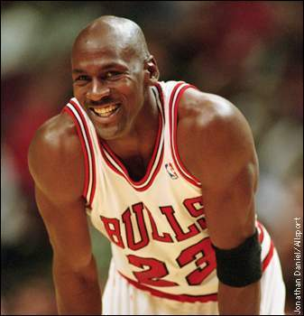

Michael Jeffrey Jordan (born February 17, 1963), also known by his initials, MJ,[3] is an American retired professional basketball player, businessman, and principal owner and chairman of the Charlotte Hornets. Jordan played 15 seasons in the National Basketball Association (NBA) for the Chicago Bulls and Washington Wizards. His biography on the NBA website states: "By acclamation, Michael Jordan is the greatest basketball player of all time."[4] Jordan was one of the most effectively marketed athletes of his generation and was considered instrumental in popularizing the NBA around the world in the 1980s and 1990s.[5]